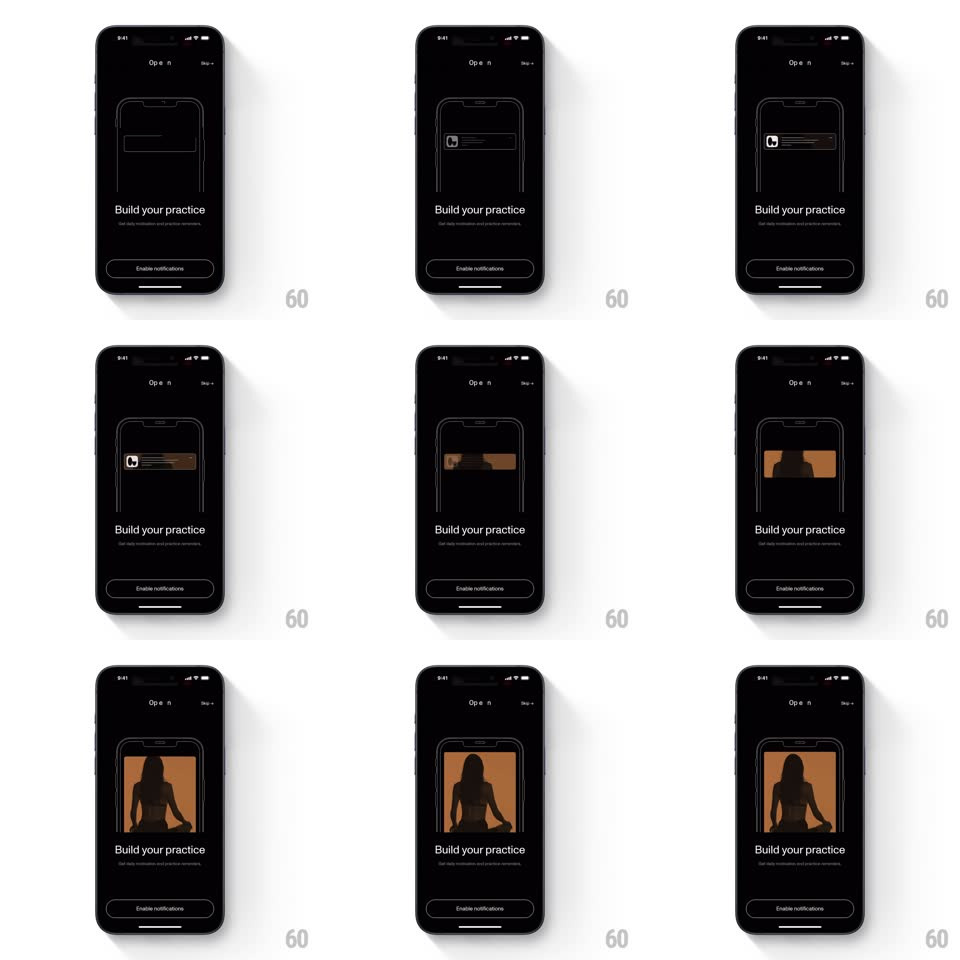

Media
Frame-by-frame

Rebuild this animation 1:1: Open's enable-notifications onboarding step - on the dark "Build your practice" screen, a wireframe phone outline appears, a wireframe notification banner slides down inside it, and the banner blooms into a full-bleed meditation photo (silhouette against a warm sky) that fills the phone frame.

Rebuild this animation 1:1: Open's enable-notifications onboarding step - on the dark "Build your practice" screen, a wireframe phone outline appears, a wireframe notification banner slides down inside it, and the banner blooms into a full-bleed meditation photo (silhouette against a warm sky) that fills the phone frame. ## Integration Integration: stack-agnostic spec - springs given as stiffness/damping, timed motions as duration + curve; map every value to your framework and animation library of choice. ## Scene Black onboarding screen: "O p e n" wordmark top, Skip link, "Build your practice" headline with subcopy, "Enable notifications" button bottom. Center stage: a thin white wireframe phone outline; inside it, first a wireframe notification banner, then a full-color meditation photo. ## Motion spec Pattern: wireframe-to-photo morph. - The phone wireframe draws in (stroke draw-on, 500ms) and holds with a faint glow. - A wireframe notification banner slides down from the phone's top edge (spring ~320/24, ~350ms) with a generic icon + text-line placeholders. - The banner expands: its height grows (300ms), the wireframe fades as a warm-toned photo crossfades in inside the banner's bounds (400ms) - then the photo keeps expanding to fill the whole phone frame (500ms ease-in-out), wireframe outline dissolving last. - The photo settles with a slow ken-burns drift (scale 1.0 -> 1.05, 4s). - Headline and button fade up under it (250ms) once the fill completes. ## Calibration - The photo's expansion must stay masked to the phone frame - it never bleeds into the black backdrop. - The notification icon (app glyph) persists briefly during the crossfade so the morph reads as "notification becomes the experience". ## Reduced motion Wireframe fades directly to the filled phone photo. ## Don't miss - The phone outline is hairline-thin white on black - the contrast with the warm photo is the payoff. - "Skip" sits top-right; "Enable notifications" is the single bottom CTA.